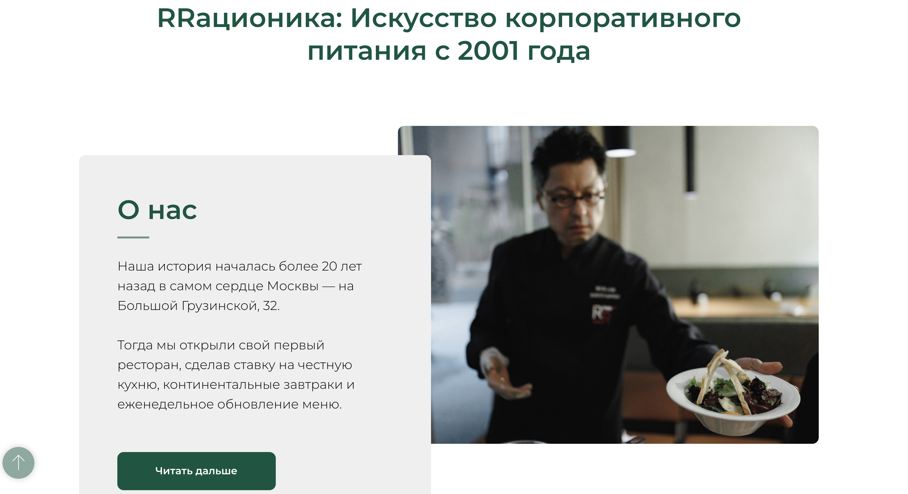
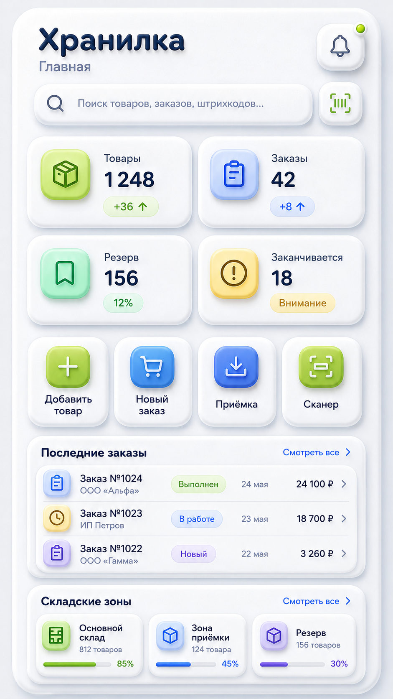

Лито AI — Где мои деньги
AI-инструмент для консультации на тему денег.
Помогаю стать заметнее в интернете, навести порядок в работе и убрать ручную рутину
Важная информация, повторяющиеся задачи и мысли о развитии не должны жить только в вашей голове
Цифровое решение берёт на себя ежедневную рутину: ручные действия, повторяющиеся сообщения и необходимость всё держать в голове
Сначала разбираемся, что происходит. Потом выбираем инструмент, который поможет именно в этой ситуации
Чтобы ваш бизнес было проще найти, понять и выбрать
Так выглядит мой рабочий процесс: последовательно разбираю задачу, собираю решение и остаюсь рядом после запуска.



AI-инструмент для консультации на тему денег.
Продумываю сценарии, которые помогут быстрее отвечать на типовые вопросы и не держать всё в голове.
Важно не название инструмента, а то, какую рабочую проблему он помогает решить.
Я — Екатерина Сухова. Помогаю малому бизнесу и частным специалистам превращать рабочие задачи в понятные цифровые решения.
Цена «от» помогает сориентироваться. Итог зависит от функций, объёма работы и того, что именно нужно вашему делу.
Сначала разбираемся в задаче, затем согласовываем состав работы и точную стоимость.
На старте достаточно рассказать, что сейчас происходит и что хочется изменить.
Это нормально: оно не нужно, чтобы начать разговор об идее или проблеме.
Не нужно решать заранее — подходящий формат выбираем после разбора задачи.
Приносите её в том виде, в котором она есть: заметкой, голосовым сообщением или обычным рассказом.
Расскажите, что сейчас происходит. Даже если пока не знаете, какое решение нужно.
Обсудить проект